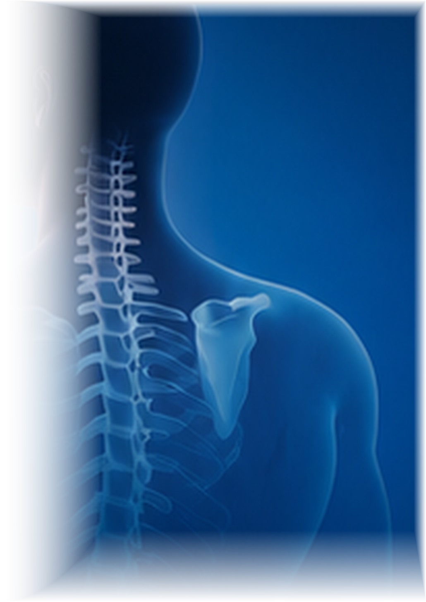
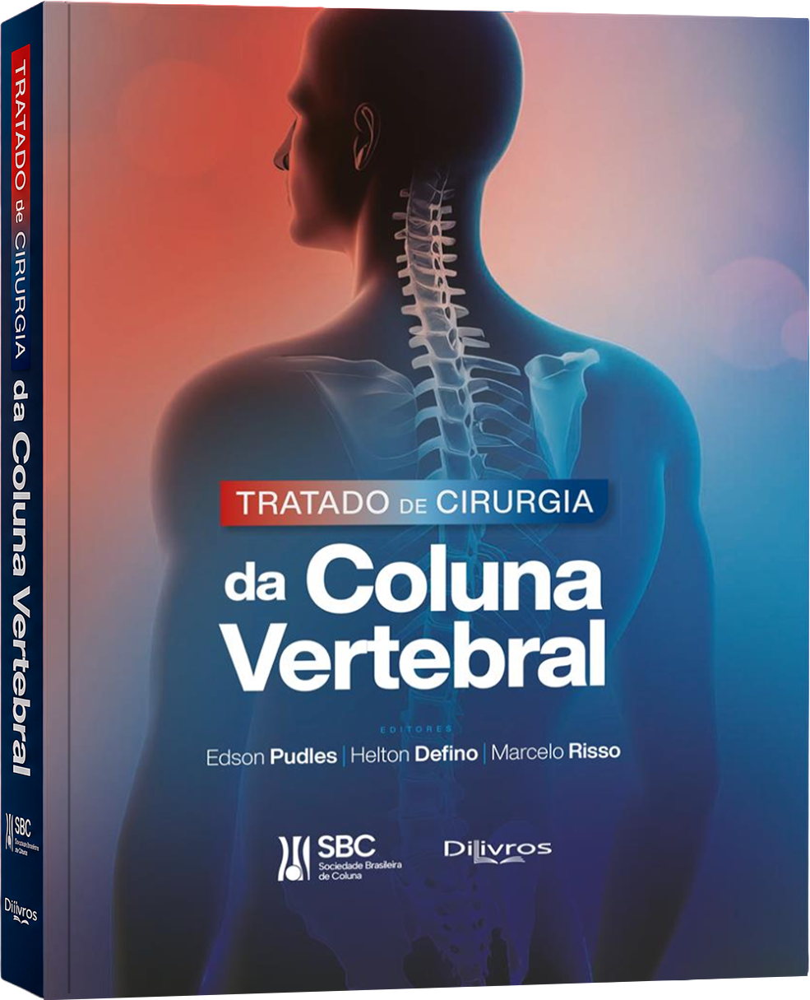
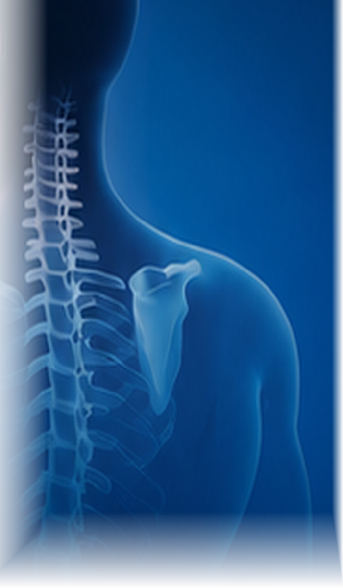

Tratado de Cirurgia
da Coluna Vertebral
Site oficial de apoio à obra impressa.
Índice, resumos e referências para
estudo e consulta.
A obra completa existe exclusivamente
em formato impresso.
em formato impresso.
Conteúdo online: índice, resumos e referências bibliográficas.
Sobre o Tratado
Referência essencial em cirurgia da coluna vertebral, esta obra reúne o conhecimento e a experiência de especialistas de todo o Brasil em um conteúdo científico atualizado, profundo e prático.
Nosso site apresenta índice detalhado, resumos dos capítulos, autores e referências bibliográficas, oferecendo um ambiente de estudo e navegação que complementa a leitura da edição impressa.
A obra completa existe exclusivamente em formato impresso
e permanecerá assim.
e permanecerá assim.
Explore a obra por áreas
Conceitos
Diagnóstico
Lesões
Traumáticas
Deformidades da
Coluna Vertebral
Doenças
Degenerativas
Tumores na
Coluna Vertebral
Outras Doenças
da Coluna
Técnicas
Cirúrgicas
Complicações
Temas
Complementares
Capítulo8
Coluna Vertebral
no Plano Sagital
Este capítulo aborda os fundamentos do equilíbrio sagital da coluna, parâmetros espinopélvicos, mecanismos compensatórios e sua aplicação no planejamento cirúrgico.
Equilíbrio sagitalIncidência pélvicaCone de economiaLordose lombarT1 slope

EPISÓDIO01
Tratado em Debate
Videocast oficial derivado dos capítulos do Tratado.
Episódio 1 – Capítulo 8
Coluna Vertebral no Plano Sagital
Discussão com os autores sobre os conceitos fundamentais do equilíbrio sagital, parâmetros radiográficos e sua importância no planejamento cirúrgico e nos resultados clínicos.
Assistir episódioAutores e Colaboradores
O Tratado é produzido por autores e coautores reconhecidos, com ampla experiência acadêmica e prática em cirurgia da coluna vertebral. Uma colaboração nacional que garante rigor científico, diversidade de abordagens e excelência editorial.
Conteúdo Trilíngue
Para ampliar o alcance e a visibilidade científica da obra, os resumos dos capítulos, metadados e referências estarão disponíveis em três idiomas: Português, Español e English.
Português
Español
English
Uma obra para
consulta, estudo e referência —
exclusivamente em formato impresso.
Conteúdo completo
disponível apenas
na edição impressa.
disponível apenas
na edição impressa.
Atualização contínua
e revisão por
especialistas.
e revisão por
especialistas.
Qualidade editorial
para bibliotecas e
profissionais.
para bibliotecas e
profissionais.
Adquira sua edição
impressa com a
qualidade DiLivros
e o selo da SBC.